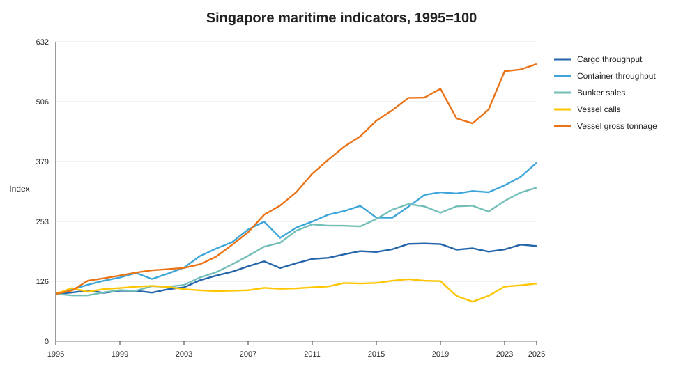
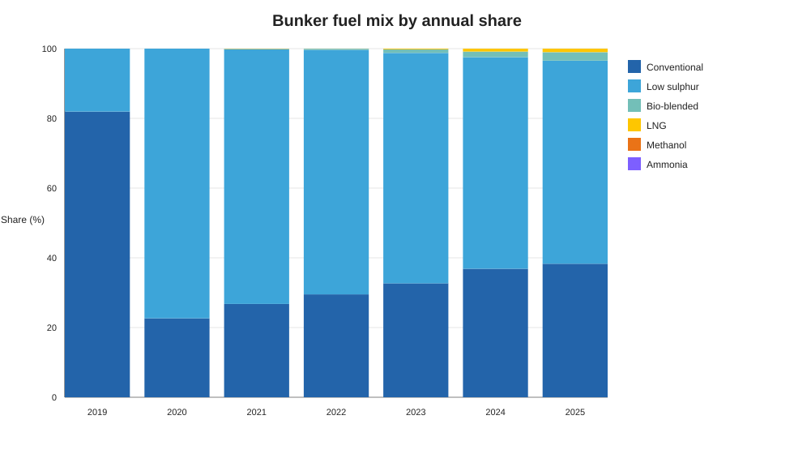
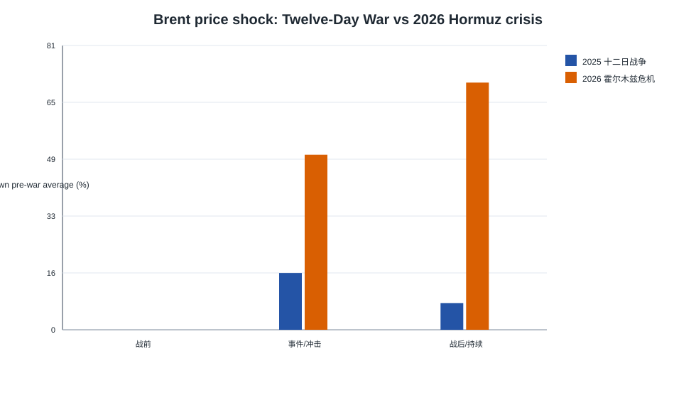
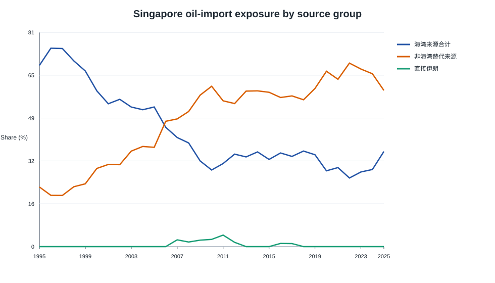
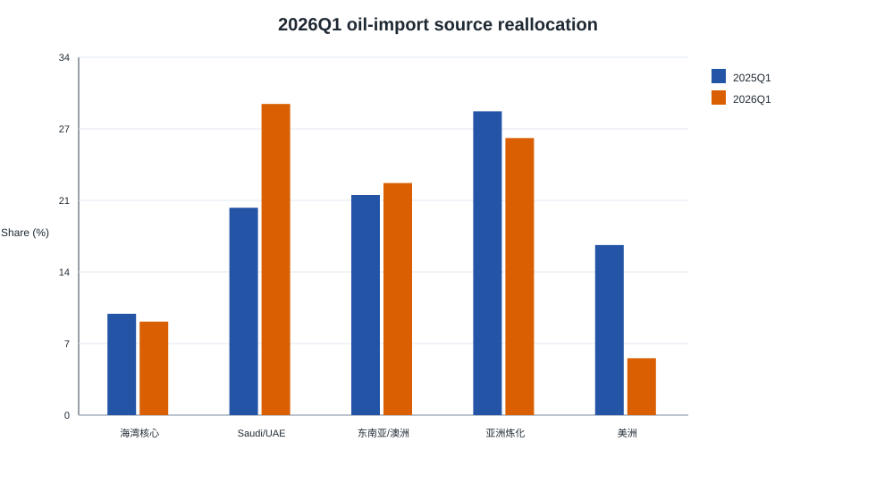

1995-2025长期港口与能源枢纽样本窗口
+485.5%到港船舶总吨位增长
36.0%2025 年油品进口海湾来源份额
38.8%2026Q1 海湾来源份额
Historical May 2026 snapshot. Q1 changes are descriptive and are not causal evidence. See Methodology.
核心图表





报告
主要报告见 Singapore maritime energy story、 事件对比 和 霍尔木兹暴露故事。